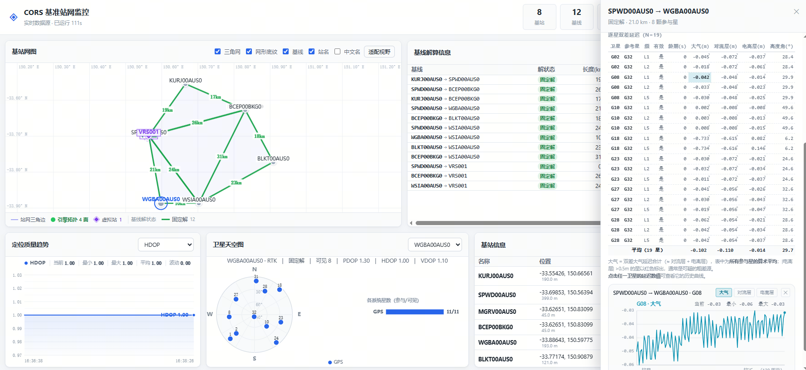

1系统概览与工作原理
mcors 是一套 CORS（Continuously Operating Reference Station，连续运行基准站）网络解算与监控系统。它由两部分组成：
- C/C++ 引擎（
cors-engine.exe）—— NTRIP 数据接入、基线解算、误差建模、虚拟参考站（VRS）服务、控制台命令处理。 - Web 可视化大屏 —— 采集层（Node.js）把引擎数据转成 Web 可消费格式，前端页面在浏览器中实时呈现。
1.1 数据是怎么流动的
理解这条链路，是后面所有排查工作的基础。数据从上游基站一路走到你的浏览器，中间有五个环节：
NTRIP 服务器→ 引擎 · NTRIP 客户端→ 引擎 · 解算核心
（基线/VRS/大气建模）→ Solution 数据流
TCP 8080→ 采集层
Node.js→ 浏览器大屏
8181
两个关键设计点需要记住：
- 引擎与采集层是解耦的。 引擎只负责算，并把结果往 8080 端口「广播」；采集层主动去连 8080 拿数据。因此采集层挂了不影响引擎解算，引擎重算也不影响采集层启动顺序。
- 控制台有两个入口，用的不是同一个协议。 引擎自身在 9000 上是 TCP 纯文本控制台；采集层在 8181 上转发了一份 HTTP 的
/api/console。不能用curl http://<引擎IP>:9000/api/console去访问引擎 —— 那个端口不认识 HTTP，会返回空响应。要发 HTTP 请求必须打到 8181。
1.2 四个端口，各司其职
| 端口 | 服务 | 作用 | 协议 |
|---|---|---|---|
9000 | 引擎控制台 | 接收命令文本（增删基站、查询状态等），也是 start-gui 等命令的输入口 | TCP 纯文本 |
8080 | Solution 数据流 | 持续推送解算结果（基站 / 基线 / 卫星 / 大气延迟） | TCP 广播 |
7999 | Monitor | 基站监控数据（可选的独立监控服务） | TCP |
8181 | 大屏 Web | 浏览器访问的可视化界面，同时提供 REST 接口与 WebSocket | HTTP / WebSocket |
引擎的 9000 / 8080 / 7999 端口默认绑定 0.0.0.0，意味着本机（127.0.0.1）和局域网其他机器都能连接。如需限制为仅本机可访问，加参数 -b local。
大屏端口 8181 由采集层监听：默认 127.0.0.1（仅本机）；需要让他人访问时执行 start-gui 8181 lan。详见 5.1 节。
1.3 目录结构
mcors-20260826/
├── BUILD.md # 编译说明
├── conf/ # 配置模板（注意：运行期用的是 build/conf/）
├── include/ # 公共头文件（cors.h 等）
├── src/ # 引擎源码
│ ├── engine/ # 主引擎 + 控制台命令（engine.c / mcors.c）
│ ├── cors/ # 解算核心 + solution 数据流
│ ├── ntrip/ # NTRIP 客户端 / 广播器 / 代理
│ ├── nrtk/ # 网络 RTK
│ ├── pnt/ vrs/ # 定位 / 虚拟参考站
│ ├── dtrignet/ # Delaunay 三角网
│ └── monitor/ # 监控服务
├── build/ # 编译输出（含运行期 conf/）
│ ├── cors-engine.exe # ★ 主程序
│ ├── conf/cors.conf # ★ 实际使用的配置
│ └── *.trace # 运行日志（按时间命名）
├── lib/ # 第三方库（libuv / openblas / gsl …）
├── viz/ # 可视化大屏
│ ├── web/ # 前端页面（HTML/CSS/JS）
│ │ ├── index.html # 主页面（各面板的 DOM 结构）
│ │ ├── css/dashboard.css
│ │ └── js/ # 各面板渲染逻辑（baseline-panel.js 等）
│ ├── collector/ # 采集层（Node.js）
│ │ ├── index.js # 入口：连接引擎 / HTTP 服务 / 广播
│ │ └── config.js # 环境变量与默认配置
│ ├── tools/ # 测试与诊断工具（探针、编译脚本）
│ └── test/ # 自动化测试套件
└── doc/ # 文档（本文件所在处）
引擎从 build/ 目录启动时读取的是 build/conf/cors.conf，不是项目根的 conf/。两者若不一致会造成「改了配置却不生效」的困惑。运行期请统一使用 build/conf/ 下的文件。
1.4 本说明书的使用方式
| 你的目的 | 建议阅读 |
|---|---|
| 第一次把系统跑起来 | 第 2 章 快速开始 → 第 6 章 可视化大屏 |
| 改了源码要重新编译 | 第 3 章 编译构建 |
| 增加 / 删除一个基站 | 第 7 章 基站增删操作 |
| 用脚本或程序对接系统 | 第 8 章 控制台命令 + 第 9 章 HTTP 接口 |
| 出问题了，界面没数据 | 第 12 章 运维与排查（含逐层排查顺序）→ 第 11 章 FAQ |
| 想理解某个术语 | 第 14 章 术语表 |
2快速开始
假设已完成编译（见 第 3 章），从零把系统跑起来只需三步，全程在一个命令行窗口里完成。
步骤 1 · 启动引擎
打开命令提示符（cmd），切到项目根目录后进入 build：
cd build
cors-engine.exe -o conf\cors.conf -t 1 -s -p 9000各参数含义（完整说明见 5.1 节）：
| 参数 | 作用 |
|---|---|
-o conf\cors.conf | 指定配置文件。相对路径以当前工作目录（即 build\）为基准 |
-t 1 | 日志级别 1（较详细）。排查问题时用这个 |
-s | 以服务模式启动。注意：此模式 stdout 会被虚拟终端接管 |
-p 9000 | 控制台监听端口 |
看到版本号与监听提示即启动成功。之后这个窗口就是引擎控制台，后续的 start / start-gui 都在这里输入。
关掉窗口 = 结束引擎进程。另外 -s 模式下控制台输入循环里有个已知的 uv_sleep 阻塞问题（见 FAQ Q13），粘滞期间键盘输入会被吃掉，但命令本身仍会正常执行。
步骤 2 · 启动解算服务
在同一个窗口（引擎控制台）输入并回车：
start这会启动 CORS 解算服务，开始按配置接入上游基站数据。
引擎用「命令表项 包含 你输入的串」来匹配，且取第一个命中项。输入 start 有极小概率命中排在表里的 start-gui。请始终输入完整命令名。详见 8.6 节。
步骤 3 · 打开大屏
在引擎控制台输入：
start-gui引擎会自动拉起采集层并打开浏览器，地址为 http://127.0.0.1:8181/。
控制台显示：
gui ready: http://127.0.0.1:8181/浏览器打开后能看到「基站网图」「基线解算信息」等面板，且右上角显示数据连接正常。
2.1 让别人也能看大屏
如果希望局域网内其他机器也能访问：
start-gui 8181 lan此时采集层监听 0.0.0.0:8181，控制台会额外打印一行网卡地址：
lan access: http://192.168.x.x:8181/把这个地址发给同事即可。
2.2 start 与 start-gui 的区别
| 命令 | 启动什么 | 不执行的后果 |
|---|---|---|
start | 引擎侧的 CORS 解算服务（接数据、算基线） | 引擎在空转，无解算数据 |
start-gui | 展示侧的采集层 + 浏览器界面 | 没有界面可看 |
两者互相独立，需要都执行：
- 只
start不start-gui→ 引擎在算，但没有界面。 - 只
start-gui不start→ 界面能打开，但没数据。界面控制台会提示cors not started yet。
3编译构建
3.1 一键编译（推荐）
viz\tools\build-engine.cmd脚本自动完成四步，产物为 build\cors-engine.exe：
| 步骤 | 目标 | 说明 |
|---|---|---|
| 1/4 | openblas_static | 最慢（LAPACK 数千个 C 文件），首次全量编译耗时较长；之后走增量，几乎不耗时 |
| 2/4 | libcors | 项目核心静态库 |
| 3/4 | cors-engine | 链接生成 exe |
| 4/4 | 拷贝 DLL | libuv.dll 等运行期依赖 |
增量编译：脚本不清理中间产物，改完代码直接重跑。改一个 .c 文件约 30 秒。
3.2 只想编译引擎目标（最常用）
若已配置好构建目录，只想快速重编引擎：
# 第一步：确保没有引擎实例占用 exe（否则链接时报 Permission denied）
taskkill /F /IM cors-engine.exe
# 第二步：进 build 目录，只编 cors-engine 目标
cd build
cmake --build . --target cors-engine -j 8全量构建会挂在第三方依赖 lib/gsl/ampl/thirdparty/test-support（缺少 asl.h）上并静默失败 —— 表面上没有明显报错，实际 cors-engine.exe 没有被重新链接，导致「改了代码却不生效」这种极难定位的问题。
务必显式指定目标：--target cors-engine。
Windows 下 exe 被运行中的进程占用时无法覆盖，链接会报 Permission denied（或 MinGW 下的 cannot open output file）。编译前先执行 taskkill /F /IM cors-engine.exe。
如果 taskkill 说「找不到进程」，说明本来就没在跑，可以继续。
3.3 编译耗时参考
| 场景 | 耗时 | 说明 |
|---|---|---|
| 首次全量（含 openblas） | 很长 | 一次性的，之后 openblas_static 目标已最新，会直接跳过 |
改 1 个 .c 文件 | 约 30 秒 | 只重编该文件 + 重新链接 |
| 改了头文件 | 1–3 分钟 | 依赖它的所有 .c 都会重编 |
| 新增源文件 | 需先 configure | 见 3.5 节 |
| 什么也没改 | 几秒 | CMake 判定已最新，只打印 Built target。这是判断「有没有真的重编」的重要线索 |
3.4 工具链路径（本机实际）
| 工具 | 路径 |
|---|---|
| MinGW | D:\x86_64-8.1.0-release-posix-sjlj-rt_v6-rev0\mingw64 |
| CMake | D:\CMAKE\bin\cmake.exe |
| make | <MinGW>\bin\mingw32-make.exe |
3.5 修改 CMakeLists 或新增源文件
viz\tools\build-engine.cmd --configure不加 --configure 时，只要 build\CMakeCache.txt 存在就直接增量编译。但新增源文件必须先重新 configure，否则新文件不在构建图里，会出现「符号未定义」或者更隐蔽的「老代码照旧跑」。
3.6 修改过代码后如何确认真的生效
这是本系统最容易踩的坑之一。请按下面顺序确认：
-
看编译输出有没有
Linking CXX executable ... cors-engine.exe只打印
Built target cors-engine而没有 Linking 行，说明 CMake 认为目标已最新 —— 文件没被重写。 -
对比产物与源码的时间戳，产物必须晚于所有源码：
dir /T:W build\cors-engine.exe src\ntrip\ntripclient.c若 exe 比源码旧，说明没有真正重编（多半是上一节的静默失败问题）。
-
确认没有旧实例在跑：
tasklist | findstr cors-engine若还有进程存活，可能你启动的是旧进程，看到的行为自然是旧的。先
taskkill再启动。
dir /T:W build\cors-engine.exe && dir /O-D /T:W src\*.c src\*\*.c先看 exe 的写入时间，再看源码按修改时间倒序排列的头部 —— 两者一对比就清楚了。
3.7 Linux 平台构建（兼容）
引擎代码已双平台化（Win32 / POSIX 自动分支），Linux 侧用 shell 版脚本编译，产物为 build/cors-engine（无 .exe 后缀）：
./viz/tools/build-engine.sh # 增量构建
./viz/tools/build-engine.sh --configure # 改 CMakeLists.txt 后重新 configureMinGW 链接期的 -Wl,--stack 选项在 Linux/ELF 上不存在。引擎线程使用大栈数组，Linux 默认 8MB 栈可能直接段错误——启动前执行 ulimit -s 102400（100MB，单位是 KB）。要求：gcc、make、cmake ≥ 3.16。细节（与 Windows 的差异对照表）见 BUILD.md 的「Linux 构建」章节。
src/ 全部 68 个源文件已通过 x86_64-linux-gnu 目标的真实 Linux 编译验证（Zig 交叉编译，glibc 头文件环境，零错误）；Windows 侧同步回归通过。完整链接与运行时验证需在真实 Linux 机器上执行一次 build-engine.sh——若遇报错，优先排查 lib/ 下第三方子目录（openblas/gsl/boost）的平台假设，而非 src/。
4配置说明
配置文件位于 build\conf\cors.conf。格式为 键 = 值，每行一项。以下是全部配置项：
| 配置项 | 含义 | 典型值 |
|---|---|---|
ntrip-sources-file | NTRIP 数据源列表（上游基站清单） | conf\ntripsources |
trace-file | 日志输出文件（留空则用默认命名 cors_engine_<时间戳>.trace） | （空） |
baselines-file | 基线列表（哪些站与哪些站组成基线） | conf\beselines |
base-stations-info-file | 基站信息字典（站名 → 类型说明等元数据） | （空） |
virtual-stations-file | 虚拟参考站（VRS）列表 | conf\vrsstations |
rtk-conf-file | RTK 参数文件 | （空） |
agent-user-file | NTRIP 代理用户表 | conf\agentuser |
ntrip-record-file | NTRIP 数据记录文件 | ntrip_record.dat |
monitor-record-file | 监控记录文件 | monitor_record.dat |
sourcetable-file | 挂载点表（NTRIP 客户端可看到的源清单） | conf\sourcetable |
monitor-port | 监控服务端口 | 7999 |
配置里写 conf\ntripsources 这样的相对路径时，引擎是相对启动它时的当前目录去解析的。这就是为什么官方启动命令要求先 cd build —— 只有这样 conf\ 才指向 build\conf\。如果你从别处启动，这些相对路径会全部失效。
4.1 数据源列表格式（ntripsources）
build\conf\ntripsources 每行一个上游基站，字段之间用空白分隔，顺序固定：
# 站名 IP地址 端口 用户名 密码 挂载点 纬度 经度 高程 类型
A001 60.29.242.238 8002 chuNtrip xxxx RTCM32eph 40.4339 116.2831 50.0 M以 # 开头的行为注释，空行忽略。
类型字段取值
| 值 | 含义 | 解算中的角色 |
|---|---|---|
M | 主站（Master） | 基准，其他站与它组成基线 |
E | 副站 / 仅星历（Ephemeris only） | 只提供星历，不参与观测值解算 |
O | 普通站（Observation） | 提供观测值，参与解算 |
V | 虚拟站（Virtual） | 由 VRS 算法生成，不是真实上游 |
界面上的「基站信息」面板会把这个类型翻译成中文显示（如「混合」「仅星历」）。若看到类型显示为 M／「混合」而与你填写的不一致，见 FAQ Q14。
4.2 虚拟站列表格式（vrsstations）
每行一个虚拟参考站，字段与数据源类似但更精简：
# 站名 纬度 经度 高程
VRS001 40.4500 116.3000 48.54.3 修改配置后的生效方式
| 改了什么 | 生效方式 | 命令 / 操作 |
|---|---|---|
| 大部分配置项 | 重启引擎 | shutdown 后重新启动 |
| 站点字典文件 | 热加载 | POST /api/dict/reload，无需重启 |
| 基站增删 | 即时 | 通过界面或 addsource/delsource 命令，不需要改配置文件 |
| RTK / 定位参数 | 即时 | loadopt / updpntopt / updrtkopt |
| 观测值更新频率 | 即时 | setobsudfrq / setrtkudfrq |
5启动与停止
5.1 命令行参数
cors-engine.exe -o conf\cors.conf -t 1 -s -p 9000| 参数 | 含义 | 示例 |
|---|---|---|
-o <file> | 配置文件路径 | -o conf\cors.conf |
-t <level> | 日志级别（1 = 较详细；数值越大越详细） | -t 1 |
-s | 启动服务模式。副作用：stdout/stderr 被虚拟终端接管，直接 fprintf 到 stdout 的内容可能看不到 | -s |
-p <port> | 控制台监听端口 | -p 9000 |
-b <addr> | 服务监听地址 | -b any / -b local |
-b 参数取值
| 取值 | 等效 | 效果 |
|---|---|---|
any / 0.0.0.0 / * | 默认 | 推荐 对外 + 本机都能访问 |
local / localhost | 127.0.0.1 | 仅本机可连，外部访问被拒 |
auto | 本机网卡 IP | 旧行为：只绑一块网卡，换网络 / 改 IP 后失效 |
| 具体 IP | — | 绑定指定地址 |
绑定具体网卡 IP（如 192.168.83.1）有三个问题：
- 只有那块网卡能连，其他网段不通；
- 换 WiFi / 改 IP 后服务直接不可达，需要重新配置；
- 从本机用
127.0.0.1也连不上（因为没绑回环）。
0.0.0.0 表示「接受所有网卡（含回环）的连接」，本机用 127.0.0.1 进、别人用任意网卡 IP 进都能通，是最稳妥的选择。
5.2 停止引擎
在引擎控制台输入：
shutdown引擎会打印 cors server shutdown ...，等待约 1 秒后退出。或直接用系统命令强制结束：
taskkill /F /IM cors-engine.exe| 命令 | 作用范围 | 进程状态 |
|---|---|---|
stop | 只停 CORS 解算服务 | 进程仍在可再 start |
shutdown | 退出整个引擎进程 | 进程终止控制台回到系统提示符 |
引擎退出后，采集层会随之失去数据源，界面上的数据会停止更新。
如果界面上出现「引擎已退出」之类的提示，第一反应不应该是「崩溃了」—— 先确认有没有人在控制台输入过 stop 或 shutdown。这是实测中真实发生过的一次误判：看起来像崩溃，实际是有人手工停了服务。
5.3 停止采集层
taskkill /F /IM node.exe如果这台机器上还跑着其他 Node 应用（其他项目、其他服务），请改用按 PID 精确结束：
REM 1. 找到占用 8181 的 PID（最后一列）
netstat -ano | findstr :8181
REM 2. 按 PID 精确结束
taskkill /F /PID <pid>5.4 完整的启动 / 停止时序
| 顺序 | 操作 | 说明 |
|---|---|---|
| 1 | 结束残留进程 | 先 taskkill 引擎，再按 PID 结束采集层 |
| 2 | 启动引擎 | cd build 后运行 cors-engine.exe ... |
| 3 | 启动解算服务 | 控制台输入 start |
| 4 | 启动大屏 | 控制台输入 start-gui（或 start-gui 8181 lan） |
| — | 以下是停止时的顺序 | |
| 5 | 停解算服务（可选） | stop。跳过也可，shutdown 会一并处理 |
| 6 | 退出引擎 | shutdown |
| 7 | 结束采集层 | shutdown 会带走它；若残留则按 PID 结束 |
6可视化大屏
浏览器访问 http://127.0.0.1:8181/ 即可打开。界面由多个面板组成，数据通过 WebSocket 实时推送（采集层每秒广播一次）。
6.1 面板总览

| 面板 | 内容 | 要点 |
|---|---|---|
| 基站网图 | 基站拓扑与 Delaunay 三角网 | 虚拟站（VRS）着重显示 |
| 基线解算信息 | 各基线的解算状态、长度、龄期、参与卫星数、双差大气延迟 | 延迟列为所有卫星的平均值；点行可打开详情抽屉 |
| 基站信息 | 站名、位置、挂载点、上游、设备、状态 | 支持界面增删基站 |
| 卫星天空图 | 可见卫星方位 / 高度角分布 | 区分参与解算与仅星历 |
| 定位质量趋势 | 定位精度随时间变化曲线 | — |
| 逐星延迟曲线 | 单颗卫星的双差大气 / 电离层 / 对流层延迟历史 | 点击延迟数值可弹出曲线图 |
6.2 基站网图的连接方式
基站之间的连线采用 Delaunay 三角网（triangle-network）：引擎侧用三角剖分算法生成权威的顶点 / 边 / 三角形数据，通过 showtrinet 命令导出为 CSV（含校验和），前端据此渲染。虚拟站会叠加在网图上并加以强调。
Delaunay 三角网有几个适合基准站网的数学性质：
- 不重叠、不留空洞 —— 覆盖区域内每个点都被三角形完整包住，不会出现「某台站孤立、没有基线」的情况；
- 最大化最小角 —— 避免出现细长三角形，使基线长度分布均匀，解算更稳定；
- 唯一性 —— 给定点集（无四点共圆退化情形）结果唯一，因此引擎与前端可以独立算出同一张网，便于校验。
6.3 基线解算信息面板详解
这是日常看得最多的面板。表格共 7 列：
| 列 | 含义 | 显示格式 |
|---|---|---|
| 基线 | 「基准站 → 流动站」的站名对。用独立箭头分隔，站名用等宽字体 | 如 VRS001 → WSIA00AUS0 |
| 解状态 | 当前解的类型 | 见下方状态表 |
| 长度 | 基线长度 | 1 位小数，单位 km |
| 龄期 | 距最近一次有效解算的时长 | 整数，单位秒 |
| 卫星数 | 参与该基线解算的卫星数量 | 整数 |
| 定位误差 | 定位残差的归一化值 | 3 位小数 |
| 双差大气延迟平均 | 所有参与卫星的算术平均值 | 3 位小数，单位 m |
解状态取值
| 状态 | 含义 | 质量 |
|---|---|---|
FIX | 整周模糊度已固定，厘米级 | 最佳 |
FIXDEG | 固定但精度退化（部分卫星质量差） | 良好 |
FLOAT | 浮点解，模糊度未固定，分米～米级 | 可用 |
PPP | 精密单点定位 | 可用 |
DGPS | 差分 GPS，亚米级 | 一般 |
SBAS | 星基增强 | 一般 |
SINGLE | 单点定位，米级 | 较差 |
DR | 航位推算（失去观测，靠惯性推） | 差 |
NONE / 无 | 无解 | 无 |
六种排序模式
表格上方的排序下拉框可切换排序依据：
| 模式 | 排序规则 | 适用场景 |
|---|---|---|
| 固定顺序（首次出现序）（默认） | 按基线在本次运行中首次出现的顺序排列，之后行位置永不变动，新基线只追加到末尾 | 日常监控——行位置稳定，一眼看出「谁是新来的」 |
| 按解状态 | FIX 最前，依次到无解；同档位内按站名 | 快速找出哪条基线没解出来 |
| 按基线长度 | 长度由长到短 | 关注长基线（解算难度大） |
| 按参与星数 | 星数由多到少 | 找出卫星数偏少的基线 |
| 按定位误差 | 误差由大到小（最差的排最前） | 一眼看到质量最差的基线 |
| 按站点名 | 按「基准站 → 流动站」字面升序 | 找特定站，或需要稳定可预期的顺序 |
早期版本存在「同一批基线每几秒上下跳一次」的问题。现在由名册（roster）模型从结构上保证稳定：
- 名册只增改、不因数据抖动删除 —— 表格行来自「名册」而非「最后一帧数据」。某基线偶尔一轮没解出来，它的行原位保留，只是超过 4 秒无新解算时降透明度（灰显，提示「这个数是老的」）；数据恢复即复原。只有引擎真断链才整体清空重计。
- 固定顺序 = 首次出现序 —— 名册新基线只追加到末尾；已有行的相对次序永不变动（默认「固定顺序」档的排序依据）。
- 被删除的基线有 30 秒缓冲 —— 基线从网图拓扑消失（删基站 / 三角网重剖淘汰）且解算侧也停了之后，行不会立刻消失，而是保留显示 30 秒再淡出移除。期间数据若恢复，倒计时自动取消。这样运维能看见「它刚被删掉」的过程，行数也不会突跳。
- 唯一决胜键 + 档位粘滞 —— 非固定顺序的档位里，用「基准站→流动站」站名对作最终比较依据；定位误差这类每帧都抖的排序键量化到档位（误差 0.1 m、长度 1 km 一档）并允许一档容差，只有真实跃变才换位。
配套的视觉提示：新出现的基线淡绿闪入、超时未更新的行灰显、被删除的基线保留 30 秒后淡出、位置变化的行淡黄一闪、解状态变差淡黄提示（变好不提示）。看到颜色提示就说明数据真的变了，不是渲染抖动。
6.4 查看单颗卫星的延迟历史
完整操作路径：
- 在「基线解算信息」表中点击任意一行（不要点延迟数值单元格），右侧会滑出详情抽屉。
- 抽屉里列出该基线所有参与卫星，每颗星有若干延迟数值。
- 点击某颗卫星的双差大气延迟 / 双差电离层延迟 / 双差对流层延迟数值，会弹出该卫星的历史曲线图。
- 曲线图上可观察延迟随时间的变化趋势。历史缓冲长度见 10.3 节。
- 点行的其他位置 → 打开基线详情抽屉（看这颗基线的所有卫星）。
- 直接点「双差大气延迟」列里的数值 → 打开该基线的延迟曲线（不用先进抽屉）。
6.5 数据连接状态
界面右上角显示数据连接状态。若显示断开或数据不更新，请按顺序检查：
- 引擎是否在运行 ——
tasklist | findstr cors-engine - 引擎里是否已执行
start—— 没执行界面会提示cors not started yet - 采集层是否在运行 ——
netstat -ano | findstr :8181，要看有LISTENING - 数据是否在推进 ——
curl http://127.0.0.1:8181/api/snapshot，看frames是否增长
详细的逐层排查顺序见 12.4 节。
↑ 返回目录7基站增删操作
基站可以在界面上操作，也可以通过控制台命令或 HTTP 接口操作。三种方式最终都下发到引擎的 addsource / delsource 命令，效果一致。
7.1 界面操作
- 在「基站信息」面板点击新增按钮，弹出表单。
- 填写各项参数（见下表），点击确定。
- 新基站会立刻出现在列表中，并标记为「运行期」（表示是运行时动态添加的，不在配置文件里）。
删除：在列表该行的操作列点击删除。
7.2 新增基站的字段
| 字段 | 说明 | 约束与校验 |
|---|---|---|
name | 站名 | 必填，唯一；重名会被拒绝（引擎侧静默忽略） |
addr | NTRIP 服务器 IP | 必填，合法 IPv4（如 192.168.1.100） |
port | 端口 | 必填，1–65535 的整数 |
user | NTRIP 用户名 | 必填 |
passwd | NTRIP 密码 | 必填 |
mntpnt | 挂载点（Mount Point） | 必填；引擎侧以此作为「源名」 |
lat | 纬度（度，十进制度） | 必填，−90 ~ 90 |
lon | 经度（度，十进制度） | 必填，−180 ~ 180 |
height | 高程（米，椭球高） | 必填 |
type | 类型 | 必填，取 M / E / O / V |
查询某个源是否存在时，引擎用的是挂载点（mntpnt）作为源名。所以如果 name 与 mntpnt 填得不一样，用 sourceinfo <name> 可能查不到 —— 要用挂载点去查。
建议两者填成一样，减少混淆。若确实需要不同（例如多个站共用同一个 NTRIP 服务器的不同挂载点），请记住查询用 mntpnt。
7.3 控制台命令操作
# 新增基站（参数顺序固定，共 10 个参数）
addsource 站名 IP 端口 用户名 密码 挂载点 纬度 经度 高程 类型
# 例如
addsource TEST01 192.168.1.100 2101 user pass RTCM32 40.01 116.01 50.0 M
# 删除基站
delsource TEST01
# 查看某数据源详情
sourceinfo TEST01
# 查看所有数据源
sourceinfoaddsource 严格要求 10 个参数（命令名后 10 项，加上命令名共 11 个 token）。参数不足时会打印一行 ASCII 用法提示：
usage: addsource NAME HOST PORT USER PASS MOUNT LAT LON H TYPE
TYPE = E(eph only) M(mixed) O(obs) V(virtual)请注意：提示是 ASCII 英文的，不是乱码 —— 控制台按 latin1 传输，中文会变乱码，所以这里刻意用了英文。
7.4 HTTP 接口操作
采集层提供 REST 接口，供界面或脚本调用（端口 8181）：
# 新增基站
curl -X POST http://127.0.0.1:8181/api/station/add \
-H "Content-Type: application/json" \
-d "{\"name\":\"TEST01\",\"addr\":\"192.168.1.100\",\"port\":2101,
\"user\":\"user\",\"passwd\":\"pass\",\"mntpnt\":\"TEST01\",
\"lat\":40.01,\"lon\":116.01,\"height\":50.0,\"type\":\"M\"}"
# 删除基站
curl -X POST http://127.0.0.1:8181/api/station/del \
-H "Content-Type: application/json" \
-d "{\"name\":\"TEST01\"}"接口对缺字段、非法 IP、非法端口（0 或 >65535）、越界经纬度、非法类型都会返回 400 并给出原因，不会下发到引擎。被拒绝的基站不会进入站点表。
这意味着：通过 8181 接口添加比直接敲 addsource 命令更安全，因为多了一道校验。
7.5 关于「运行期」标记
通过界面 / 命令新增的基站带 runtimeOnly 标记，界面上显示为「运行期」。这类记录只存在于运行时：
- 引擎重启后消失（因为不在配置文件里）
- 删除后从站点表与数据表中清理，不会残留（见下方的生命周期说明）
如果需要永久生效，请把基站写进 build\conf\ntripsources 配置文件，然后重启引擎。
删除基站后的数据生命周期
删除基站是一个分阶段收敛的过程，各阶段时间不同：
| 时间 | 发生的事 | 界面上看到什么 |
|---|---|---|
| 立即（<1 秒） | 源表删除；三角网重剖（该站顶点与相关边消失）；基线表删除对应基线 | 网图上该站与连线消失；基线表对应行进入 30 秒缓冲期 |
| 10 ～ 15 秒 | 该站的孤儿数据（观测值 / 站信息 / 卫星状态 / 解算状态等）由生命周期回收器从共享内存表中清除——删除后这些数据不再更新，超过 10 秒即被判定过期回收 | 无感知（内部清理） |
| 30 秒 | 基线表缓冲期到期 | 基线表对应行淡出消失 |
反向操作同理：新增基站时数据一经创建即视为活跃管理，只要持续有更新就永远不会被回收；若新增的源从不推流（如配置了不存在的 caster），删除它之后这些零数据会在登记后 10 秒被兜底回收。
7.6 三种操作方式的对比
| 方式 | 优点 | 缺点 | 适用 |
|---|---|---|---|
| 界面操作 | 直观，有表单校验，即时看到结果 | 需要有人开浏览器 | 日常运维 |
| 控制台命令 | 无需浏览器；可在引擎侧直接操作 | 参数靠位置，无校验，缺参数提示不友好 | 排障、快速验证 |
| HTTP 接口 | 可脚本化、可集成；有完整字段校验 | 需要采集层在跑 | 自动化、批量操作 |
8控制台命令
引擎控制台支持以下命令。命令行尾需要是 CRLF（采集层的 TCP 客户端会自动加，telnet 默认也是），只发 \n 时可能被当成命令的一部分。
8.1 服务控制
| 命令 | 说明 |
|---|---|
start-gui [端口] [lan] | 启动可视化大屏（自动拉起采集层并打开浏览器）。不带参数用默认端口 8181 且仅本机；加 lan 则对外开放 |
start | 启动 CORS 解算服务 |
stop | 停止 CORS 解算服务（引擎进程继续运行，可再 start） |
shutdown | 退出引擎进程 |
quiet [0|1] | 查询 / 设置 showbls 静默状态。不带参数 = 查询；quiet 0 恢复回显；quiet 1 静默 |
8.2 数据源管理
| 命令 | 说明 |
|---|---|
addsource | 新增 NTRIP 数据源（基站）。需 10 个参数，见 7.3 节 |
delsource <站名> | 删除数据源 |
sourceinfo [站名] | 查询数据源详情（不接参数则列出全部）。站名用挂载点 |
monisrcinfo | 数据源监控信息 |
loadopt | 重新加载配置 |
updpntopt / updrtkopt | 更新定位 / RTK 参数 |
setobsudfrq <秒> / setrtkudfrq <秒> | 设置观测值 / RTK 更新频率 |
8.3 解算信息查询
| 命令 | 说明 |
|---|---|
showbls | 显示基线解算状态概览。这条是大屏数据的主要来源 |
showblsols | 显示基线解算详细结果 |
showblsif / showblswl | 显示基线 IF（无电离层组合）/ WL（宽巷）解算信息 |
showambdds | 显示双差模糊度 |
showatmodddelay | 显示双差大气延迟 |
navidata / observ / satellite | 星历 / 观测值 / 卫星信息 |
rtkpos | RTK 定位结果 |
采集层为了给大屏供数，会每秒下发一次 showbls。这个命令的输出条目较多，若不禁默会把控制台刷得没法用。
因此系统默认静默该命令的输出。需要手工看内容时，先 quiet 0 恢复回显，看完再 quiet 1 恢复静默。
8.4 三角网与虚拟站
| 命令 | 说明 |
|---|---|
showdtrigs | 显示三角网顶点 |
showsubnet | 显示子网信息 |
drawdtrignet | 绘制 / 导出三角网 |
showtrinet | 导出权威三角网 CSV（顶点 / 边 / 三角形 + 校验和尾巴），是大屏三角网渲染的数据基准 |
addvsta / delvsta | 新增 / 删除虚拟参考站（VRS） |
showvstas | 列出虚拟参考站 |
drawvsta | 绘制虚拟站位置 |
CSV 末尾附带的校验和用于确认数据完整且未被截断。网络传输或缓冲区边界问题可能导致 CSV 尾部缺失，此时校验和不匹配 —— 前端据此可以判断「拿到的三角网是否可信」，避免渲染出一张残缺的网。
8.5 用户与监控
| 命令 | 说明 |
|---|---|
adduser / deluser / showusers | NTRIP 用户管理 |
addmonitor / delmonitor | 监控源管理 |
addntripagent / delntripagent | NTRIP 代理管理 |
agentinfo | 代理信息 |
8.6 命令匹配规则（重要）
引擎判断命令的逻辑是：把输入的第一个词与命令表逐项全等比较（区分大小写），命中即执行。这意味着：
- 必须输入完整命令名 —— 输入
start-g或st不会命中任何命令，只会得到unknown command； - 相近命令互不干扰 ——
start与start-gui是两个独立命令，谁也不会被对方「抢走」。
完整命令表（按功能分组排列，共 38 个）：
start-gui start stop addsource delsource loadopt
navidata observ satellite sourceinfo rtkpos addvsta
delvsta showdtrigs showbls showsubnet adduser deluser
showvstas showusers monisrcinfo agentinfo addmonitor addntripagent
delmonitor delntripagent updpntopt updrtkopt showblsols drawdtrignet
drawvsta showambdds showblsif showblswl showatmodddelay
setobsudfrq setrtkudfrq shutdown- 命令名拼写 —— 是否少打或多打了字符（精确匹配下，多一个字符都算不命中）。
- 是否带了不该有的参数 —— 多数命令参数不足时会打印
usage:提示行；个别命令仍会静默忽略。
9HTTP 接口
采集层（默认 8181 端口）提供以下接口，供前端与自动化脚本使用。全部接口都是同步 JSON 响应。
9.1 接口清单
| 方法 | 路径 | 说明 |
|---|---|---|
| GET | /api/snapshot | 完整状态快照（连接状态、站点表、字典统计、历史数据等） |
| GET | /api/stations | 站点列表（比 snapshot 轻量） |
| POST | /api/console | 执行控制台命令，请求体 {"cmd":"showbls"} |
| POST | /api/station/add | 新增基站（带字段校验） |
| POST | /api/station/del | 删除基站 |
| POST | /api/dict/reload | 重新加载站点字典（热加载） |
| POST | /api/baseline/add | 新增基线 |
| POST | /api/baseline/del | 删除基线 |
没有 /api/state、没有 /api/health、没有 /api/version。访问不存在的路径会返回 404。做健康检查请用 /api/snapshot。
9.2 查询状态
curl http://127.0.0.1:8181/api/snapshot返回 JSON，关键字段：
{
"solution": { "connected": true, "frames": 5625, "errors": 0 },
"console": { "connected": true },
"stations": [ ... ],
"dictStats": { ... }
}| 字段 | 含义 | 健康判断 |
|---|---|---|
solution.connected | 采集层是否连上了引擎的 8080 数据流 | 应为 true |
solution.frames | 已接收的解算数据帧数 | 连续两次读应增长 |
solution.errors | 解析错误计数 | 应为 0 或稳定不增长 |
console.connected | 采集层是否连上了引擎的 9000 控制台 | 应为 true |
connected: true 只说明 TCP 连接建起来了，不代表数据在流。唯一可靠的判断是 frames 在增长。间隔几秒取两次对比：
curl -s http://127.0.0.1:8181/api/snapshot | findstr /C:"frames" & timeout /t 3 >nul & curl -s http://127.0.0.1:8181/api/snapshot | findstr /C:"frames"9.3 执行任意控制台命令
curl -X POST http://127.0.0.1:8181/api/console \
-H "Content-Type: application/json" \
-d "{\"cmd\":\"sourceinfo\"}"写成 command 会直接返回 400。这是实测踩过的坑。
9.4 健康检查脚本
REM 最简：确认 snapshot 可访问且数据流已连上
curl -s http://127.0.0.1:8181/api/snapshot | findstr /C:"\"connected\":true"
REM 更可靠：确认 frames 真的在推进（两次读数不同即正常）
curl -s http://127.0.0.1:8181/api/snapshot | findstr /C:"frames"9.5 用 PowerShell 取结构化数据
需要提取具体字段值时，PowerShell 比 findstr 方便：
# 取 solution 的连接状态与帧数
$s = Invoke-RestMethod http://127.0.0.1:8181/api/snapshot
$s.solution | Select-Object connected, frames, errors
# 列出所有站点名
$s.stations | Select-Object -ExpandProperty name/api/snapshot 会带上完整的逐星延迟历史缓冲，实测可达数百 KB。若只需站点清单，用更轻的 /api/stations。前端实时数据走 WebSocket，不走这个接口。
10采集层配置
采集层是 Node.js 程序（viz/collector/index.js），职责是：连引擎的 8080 拿解算数据、连 9000 下发控制台命令、对外提供 8181 的 HTTP + WebSocket 服务。
正常使用时由 start-gui 自动拉起，无需手工干预；需要单独调试时才手动启动。
10.1 手动启动
set MCORS_SOURCE=live
set MCORS_HOST=127.0.0.1
set MCORS_WEB_PORT=8181
node viz\collector\index.js10.2 环境变量
| 变量 | 默认 | 说明 |
|---|---|---|
MCORS_SOURCE | mock | live = 连真引擎；mock = 内置模拟数据 |
MCORS_HOST | 自动探测 | 引擎地址 |
MCORS_CONSOLE_PORT | 9000 | 控制台端口 |
MCORS_SOLUTION_PORT | 8080 | 数据流端口 |
MCORS_WEB_PORT | 8181 | 大屏 HTTP 端口 |
MCORS_WEB_HOST | 0.0.0.0 | 大屏监听地址 |
MCORS_CONF | 自动解析 | conf 目录路径（用于读站点字典等） |
不设该变量时采集层默认进入 mock 模式，界面会显示模拟数据，看起来「一切正常」—— 但实际上没有连引擎。排查真实问题时务必确认该变量为 live。
典型误判场景：引擎挂了，但界面还在动（因为有 mock 数据），于是花大量时间在引擎侧找问题。先确认这一条。
通过 start-gui 启动时，引擎会自动设置 MCORS_SOURCE=live、MCORS_HOST=127.0.0.1、MCORS_CONF 指向正确的 conf 目录，并把大屏监听地址按「本机 / lan」模式设置好。手动启动才需要自己设。
10.3 历史缓冲与性能相关参数
以下参数在 viz/collector/config.js 中定义，一般不需要改：
| 参数 | 默认值 | 含义 |
|---|---|---|
satHistoryLimit | 120 | 每颗卫星保留的历史历元数。决定「逐星延迟曲线」能回溯多久（按 1 Hz 采样约 2 分钟） |
satHistoryMaxBaselines | 12 | 最多为多少条基线保留逐星历史。超出时不再新增，避免内存无上限增长 |
| 广播间隔 | 1000 ms | WebSocket 推送频率（1 秒）。改小会更实时但更耗资源 |
内存占用大致与 satHistoryLimit × 基线条数 × 每基线卫星数 成正比。把 satHistoryLimit 从 120 提到 1200，内存会变成约 10 倍。/api/snapshot 的响应体积也会同步膨胀。
10.4 采集层的日志
采集层把日志写到标准输出。通过 start-gui 启动时，这些输出会被重定向到引擎的日志文件，可以一并在 build\*.trace 里看到。
手动启动时日志直接打印在命令行窗口，便于实时观察。
↑ 返回目录11常见问题 FAQ
Q1 · 改了代码，编译也过了，但行为没变
原因：用了全量 cmake --build .，它挂在第三方依赖上静默失败，exe 没被重新链接。
解决：改用 cmake --build . --target cors-engine -j 8，并用时间戳核对产物是否比源码新（见 3.6 节）。
Q2 · 链接报 Permission denied
原因：cors-engine.exe 正在运行，文件被占用。
解决：先 taskkill /F /IM cors-engine.exe 再编译。
Q3 · 执行 start-gui 弹出「Windows 找不到文件 'node'」
原因：Node.js 装在非标准路径（如 WorkBuddy 托管版本目录），引擎的查找逻辑找不到它。
解决：把 Node 放到下列任一位置，或装到标准路径：
C:\Program Files\nodejs\%USERPROFILE%\.workbuddy\binaries\node\versions\<版本>\%LOCALAPPDATA%\Programs\nodejs\
引擎会自动在这些位置查找并给出提示。
Q4 · start-gui 后大屏打不开 / 数据不更新
按顺序检查：
- 控制台是否显示
gui ready？没有则看它报的错误。 - 引擎里是否执行过
start？没执行会提示cors not started yet，此时界面能开但无数据。 - 8181 是否被占用？
netstat -ano | findstr :8181。若有其他 node 实例占着，先结束它。
若以上都正常，继续走 12.4 节的逐层排查。
Q5 · 界面上看到的站点表与预期不符
原因：引擎读的是 build\conf\，而你可能改的是项目根的 conf\。
解决：确认改的是 build\conf\ntripsources，或调用 POST /api/dict/reload 热加载。
Q6 · 用 sourceinfo <站名> 查不到刚加的基站
原因：引擎侧「源名」取的是挂载点（mntpnt），不是 name。
解决：用挂载点去查，或让两者填成一样。
Q7 · 新增的基站重启后消失了
原因：通过界面 / 命令新增的基站是「运行期」（runtimeOnly）记录，不写入配置文件。
解决：需要永久保留就写进 build\conf\ntripsources，然后重启引擎。
Q8 · 大屏显示的数据像是假的 / 一直不变
原因：采集层处于 mock 模式（未设 MCORS_SOURCE=live）。
解决：用 start-gui 启动（会自动设好），或手动启动时显式设置该变量。
Q9 · 引擎控制台一直刷屏
原因：showbls 被采集层每秒轮询，每次输出条目较多。
解决：默认已静默。用 quiet 查看状态，quiet 0 恢复回显，quiet 1 恢复静默。
Q10 · 只有本机能访问，其他机器连不上
检查：
- 引擎是否用了
-b local？那会只监听回环。去掉该参数即恢复对外。 - 大屏是否用
start-gui 8181 lan启动的？不带lan时采集层只听本机。 - Windows 防火墙是否放行了 8181 / 9000 / 8080 端口。
- 用
netstat -ano | findstr :8181确认监听地址是0.0.0.0:8181而不是127.0.0.1:8181。
Q11 · 基线表的行数、顺序、名称会变
先分清两种完全不同的变化，不要混为一谈：
| 现象 | 成因 | 正常吗 |
|---|---|---|
| 行位置每几秒变一次 （同一批基线上下跳） |
排序键不确定 —— 同一帧里所有基线的观测时刻完全相同，若拿它当决胜键，比较函数恒返回 0，顺序就取决于数据到达顺序 | 曾有此 bug，已修 |
| 行的成员变了 （少一条 / 多一条，站名换掉） |
基站真的上下线了。引擎下发的 showbls 结果里就没这条基线 |
正常 这是真实状态 |
连续取几次快照，比对基线集合（站名对）是否真的不同：
for /l %i in (1,1,6) do @(curl -s http://127.0.0.1:8181/api/snapshot | findstr /c:"baseName" & timeout /t 3 >nul)集合完全一致却看到行在动 ⇒ 排序问题；集合本身就不同 ⇒ 真实上下线，属正常。
如果表格「一直在闪」（行序没变也在闪）
这是一个**独立于排序**的问题，2026-10-05 实测并修复。判断特征：
- 行数量和顺序看着都没变，但整张表持续有明暗闪动；
- 数值列每帧更新（定位误差等），但这不足以造成闪烁。
成因：表格复用 <tr> 节点时，曾把所有行每帧都搬进临时容器再搬回来。按 CSS 规范，「从文档移除再插入」会重启该元素上所有正在播放的动画 —— 于是行序明明没变，行高亮的动画却每帧从头开始播，永远播不完，看上去就是不停闪。
实测数据：10 行连推 5 帧，竟然发生 100 次节点移动（每行每帧都动一次）。
修复：只对真正需要换位的行做移动，稳态下移动次数为 0；同时把「位置变化」的提示从整行铺底改成左侧一条细色条，降低视觉强度。
回归护栏：node viz\test\bl-flicker-repro-test.js（12 项）。该套件的核心断言是「稳态连推 5 帧，节点移动次数必须为 0」。
行位置稳定性由三层机制保证（源码位于 viz/web/js/baseline-panel.js），详见 6.3 节的说明框。
Q12 · 大屏上的数字看着不太确定
基线表的数值列都按固定小数位显示，位数不足补零、无值显示 —：
- 长度 1 位小数 · 龄期 整数 · 参与卫星数 整数
- 定位误差 3 位小数 · 双差大气延迟 3 位小数
数字用等宽字体 + tabular-nums 渲染，保证不同行的小数点上下对齐，便于纵向比较。
「双差大气延迟」列是全表唯一带角标的列（标注 平均），表示这是所有参与卫星的算术平均值，不是某一颗星的值。要看逐星明细，点那一行打开抽屉。
Q13 · 引擎控制台敲了命令但好像没反应
原因：控制台的输入循环里有 uv_sleep(500)，最坏情况下会造成最长约 30 秒的输入粘滞 —— 期间键盘输入被吃掉。
解决：耐心等待；命令本身仍会正常执行。若必须立刻操作，可另开一个 TCP 客户端连 9000 发命令，或用 POST /api/console。
备注：这是已知的待优化点（理想做法是改成事件驱动的 uv_timer 轮询 + 状态机，而不是阻塞 sleep）。
Q14 · 新增基站后，界面显示的类型 / 高程与我填的不一致
原因（历史 bug，已修）：采集层在新增基站时，如果先下发命令再登记字典，那么在这几百毫秒到数秒的窗口内，sourceinfo 轮询（每 3 秒一次）可能先跑到。轮询建立记录时给的类型是连接类型（如「NTRIP」而不是 M/E/O/V）且没有高程，而登记逻辑又「不覆盖已有记录」，于是你填的值被悄悄替换掉了。
现象：表格里类型显示为「混合」、高程显示为 —。
现状：已改为先登记字典、再下发命令，让用户输入成为权威首值，轮询只负责回填 srcId / ECEF / 状态。
Q15 · 长基线 / 低高度角卫星的延迟数值特别大
原因：这是正常的物理现象，不是 bug。
- 基线越长，两台站的观测量所经过的大气路径差异越大，双差残差里残留的大气延迟就越大。
- 卫星高度角越低，信号穿过大气层的斜路径越长，电离层 / 对流层延迟本身也越大。
怎么用这个信息：低高度角卫星对解算贡献小、误差大，通常会被高度角截止角过滤掉。如果某条基线 FIX 解不稳定，可以打开抽屉看是不是某颗低高度角卫星的延迟异常突出。
Q16 · snapshot 返回的 JSON 很大，处理很慢
原因：/api/snapshot 会带上完整的逐星延迟历史缓冲（默认每星 120 个历元），实测可占响应的绝大部分体积。
解决：
- 只要站点清单 → 用
/api/stations。 - 只要连接状态 → 用
findstr过滤，不要解析整个 JSON。 - 前端实时数据 → 走 WebSocket（采集层推送的是精简版，不含完整历史）。
12运维与排查
12.1 查看运行状态
REM 引擎进程
tasklist | findstr cors-engine
REM 采集层进程
tasklist | findstr node
REM 各端口监听情况
netstat -ano | findstr "9000 8080 8181"正常运行时应看到：
TCP 0.0.0.0:9000 LISTENING <引擎PID>
TCP 0.0.0.0:8080 LISTENING <引擎PID>
TCP 127.0.0.1:8181 LISTENING <采集层PID>tasklist 里有进程不代表服务可用 —— 实测遇到过「假活」进程：进程在、trace 日志仍在增长、TCP 连接也还在，但端口没有监听，导致客户端连不上。
唯一可靠的判断依据是 netstat 里该端口处于 LISTENING。
12.2 日志文件
引擎在 build\ 目录生成 trace 日志，文件名形如：
cors_engine_20261005093622.trace文件名中的时间戳是 UTC，换算成本地时间需 +8 小时。按修改时间找最新的那个：
dir /O-D /T:W build\*.trace长时间运行会产生大量日志文件（单个可达数十 MB）。定期清理旧文件，只保留最近若干天：
REM 列出 7 天前的 trace（确认无误后再删）
forfiles /P build /M *.trace /D -7 /C "cmd /c echo @file"-s 启动服务模式时，stdout / stderr 会被虚拟终端接管，某些直接写 stdout 的诊断输出可能看不到。需要打印诊断信息时，改为直接 fopen 写一个独立文件最稳妥。
12.3 自检脚本
项目提供了一批自动化测试与诊断脚本，分放在两个目录：
viz\test\—— 测试套件（断言式，带通过 / 失败计数）viz\tools\—— 诊断探针与辅助脚本（编译、探测、验证）
测试套件（viz\test\）
| 脚本 | 用途 | 断言数 |
|---|---|---|
run-all.js | 全量入口，依次运行下列套件并汇总 | 450 |
delaunay-test.js | Delaunay 三角剖分 | 22 |
trinet-parser-test.js | 三角网 CSV 解析（含校验和） | 24 |
solution-parser.test.js | 解算报文解析 | 89 |
trend-render-test.js | 趋势图渲染 | 19 |
atmo-avg-test.js | 双差大气延迟平均值（单元） | 26 |
atmo-avg-e2e.js | 双差大气延迟平均值（端到端） | 18 |
sat-history-test.js | 逐星延迟历史缓冲 | 39 |
sat-delay-render-test.js | 逐星延迟曲线渲染 | 54 |
sat-chart-interact-test.js | 逐星延迟曲线交互 | 80 |
vrs-map-test.js | 虚拟站网图 | 27 |
bl-sort-stability-test.js | 基线表排序稳定性 | 40 |
bl-flicker-repro-test.js | 基线表闪烁回归（DOM 移动语义） | 12 |
e2e.js | 端到端（需独立运行） | 293 |
bl-frame-stability-live.js | 跨帧行序稳定性（需真实快照，不列入默认套件） | 5 |
诊断脚本（viz\tools\）
| 脚本 | 用途 |
|---|---|
build-engine.cmd | 一键编译引擎（见 第 3 章） |
start-engine.cmd | 启动引擎的便捷脚本 |
station-add-del-probe.js | 基站增删功能实测探针（支持 --rounds N） |
console-probe.js | 控制台连通性探测 |
monitor-probe.js | 数据流监控探测 |
capture-solution.js | 抓取一帧解算数据，便于离线分析 |
quiet-probe.js | 验证 quiet 静默机制 |
baseline-table-probe.js | 基线表数据探测 |
运行方式
需要 Node.js（若不在 PATH 中，用完整路径调用，例如 C:\Users\<你>\.workbuddy\binaries\node\versions\22.22.2-3\node.exe）：
REM 全量测试（约 40 秒）
node viz\test\run-all.js
REM 端到端测试（需独立运行）
node viz\test\e2e.js
REM 基站增删探针，跑 5 轮
node viz\tools\station-add-del-probe.js --rounds 5某些套件（尤其是「控制台应答切分」）会报 spawnSync ... EBUSY。这通常是杀软 / 并发编译临时占用 node.exe 造成的，在受限环境里甚至可能是环境级限制（实测连 node -e "console.log(42)" 都返回 EBUSY）。
此时 run-all.js 会把它标为「需独立运行」并给出命令，不计入失败。逐个手动跑该套件即可，各套件都能独立运行并自报计数。
实测参考值：run-all.js 汇总 450 通过 / 0 失败（另有需独立运行的套件未计入）；e2e.js 单独运行 293 通过 / 0 失败。
12.4 数据流排查顺序
界面无数据时，严格按此顺序逐层排除。每一层都确认通过后再看下一层，不要跳步：
| 层 | 检查什么 | 命令 | 通过标准 |
|---|---|---|---|
| 1 | 引擎进程在吗 | tasklist | findstr cors-engine | 有进程 |
| 2 | 端口在听吗 | netstat -ano | findstr "9000 8080" | 两条都是 LISTENING |
| 3 | 解算服务起了吗 | 控制台输入 start | 无 cors not started yet |
| 4 | 上游连上了吗 | 控制台输入 sourceinfo | 各源状态为已连接 |
| 5 | 采集层在跑吗 | netstat -ano | findstr :8181 | LISTENING |
| 6 | 采集层连上引擎了吗 | curl -s http://127.0.0.1:8181/api/snapshot | solution.connected: true |
| 7 | 数据在推进吗 | 间隔 3 秒取两次 snapshot 比 frames | 数值增长 |
| 8 | 是不是 mock 模式 | 看采集层启动参数 / 环境变量 | MCORS_SOURCE=live |
- 采集层在 mock 模式 —— 界面在动，但数据是假的。看第 8 层。
- 引擎没执行 start —— 端口都在听，但没数据。看第 3 层。
- 「假活」进程 —— 进程在、日志在写，但端口没 LISTENING。看第 2 层。
12.5 推荐的日常启动流程
REM 1. 清理残留（按 PID 更精确，见 5.3 节）
taskkill /F /IM cors-engine.exe
REM 2. 启动引擎
cd build
cors-engine.exe -o conf\cors.conf -t 1 -s -p 9000
REM 3. 在引擎控制台依次执行
start
start-guistarting gui collector ...
node : C:\...\node.exe
entry : D:\...\viz\collector\index.js
engine : 127.0.0.1:8080 (solution stream)
web : 127.0.0.1:8181 (local only)
waiting
gui ready: http://127.0.0.1:8181/12.6 关键文件速查
| 要改什么 | 改哪个文件 |
|---|---|
| 上游基站清单 | build\conf\ntripsources |
| 基线定义 | build\conf\beselines |
| 虚拟站清单 | build\conf\vrsstations |
| 引擎全局配置 | build\conf\cors.conf |
| 控制台命令行为 | src\engine\engine.c |
| 命令行参数解析 | src\engine\mcors.c |
| 大屏布局 | viz\web\index.html |
| 大屏样式 | viz\web\css\dashboard.css |
| 基线表面板逻辑 | viz\web\js\baseline-panel.js |
| 采集层主逻辑 | viz\collector\index.js |
| 采集层默认参数 | viz\collector\config.js |
13性能与资源占用
13.1 各环节的频率
| 环节 | 频率 | 说明 |
|---|---|---|
采集层下发 showbls | 1 秒 | 换取大屏的实时性；也是控制台刷屏的来源 |
采集层下发 sourceinfo | 3 秒 | 刷新站点表的连接状态 |
| 采集层 WebSocket 广播 | 1 秒 | 推送给浏览器 |
| 逐星历史采样 | 随解算历元 | 每星保留最近 120 个历元 |
13.2 已知的性能问题
实测观察到引擎内存随运行时间持续增长（曾达到 GB 级别）。初步线索指向数据源增删的对称性问题：
- 新增源走的是同步路径；
- 删除源走的是异步路径。
两者不对称，可能导致删除时部分资源未被释放。
当前的应对：定期重启引擎（例如每天一次，或内存超过阈值时）。重启前先 shutdown 让引擎正常收尾。
控制台输入循环中的 uv_sleep(500) 会造成最长约 30 秒的输入粘滞。不影响命令执行，只影响手工交互体验。详见 FAQ Q13。
13.3 内存占用的主要来源
| 进程 | 主要占用 | 可调参数 |
|---|---|---|
| cors-engine.exe | 解算矩阵（受基线与卫星数影响）、数据源对象、日志缓冲 | — |
| node.exe（采集层） | 逐星延迟历史缓冲、站点字典、WebSocket 连接 | satHistoryLimit、satHistoryMaxBaselines |
| 浏览器 | 页面 DOM、曲线图数据点 | 关闭不用的曲线图 |
13.4 磁盘占用
磁盘增长主要来自两个地方：
- trace 日志 —— 在
build\*.trace。长时间高日志级别运行会积累大量文件。 - 数据记录文件 —— 若配置了
ntrip-record-file/monitor-record-file，会持续写入。
建议定期检查 build\ 目录大小，清理过期的 trace 文件（见 12.2 节）。
14术语表
| 术语 | 全称 / 英文 | 含义 |
|---|---|---|
| CORS | Continuously Operating Reference Station | 连续运行基准站。长期连续观测并提供差分服务的 GNSS 基准站 |
| NTRIP | Networked Transport of RTCM via Internet Protocol | 通过互联网传输 RTCM 差分数据的协议，本系统接入上游用的就是它 |
| RTCM | Radio Technical Commission for Maritime Services | 差分数据的标准格式。RTCM3 是当前主流版本 |
| 挂载点 | Mount Point / mntpnt | NTRIP 服务器上某个数据流的标识名。本系统引擎把它当作「源名」 |
| 基线 | Baseline | 两台基准站之间的观测向量。基线解算就是求这个向量 |
| 流动站 / 基准站 | Rover / Base | 基线两端的角色。本系统在配置里用「基准站 → 流动站」的形式标识一条基线 |
| 模糊度 | Ambiguity | 载波相位观测中的整周未知数。固定（FIX）后可达厘米级 |
| FIX / FLOAT | Fixed / Float Solution | 模糊度已固定 / 未固定的解。FIX 精度远高于 FLOAT |
| 双差 | Double Difference | 在测站间、卫星间各做一次差分，消除卫星钟差与接收机钟差 |
| 大气延迟 | Atmospheric Delay | 信号穿过电离层 / 对流层产生的传播延迟，是双差残差的主要成分 |
| VRS | Virtual Reference Station | 虚拟参考站。根据附近真实站的数据算出「虚拟」的一台站，为流动站提供差分 |
| Delaunay 三角网 | Delaunay Triangulation | 一种最优三角剖分。本系统用它确定基站之间的连接关系 |
| 龄期 | Age | 距最近一次有效解算经过的时长。龄期越小说明解越新鲜 |
| 高度角截止角 | Elevation Mask | 低于该高度角的卫星不参与解算（信号穿越大气的路径太长，误差大） |
| 椭球高 | Ellipsoidal Height | 相对于参考椭球面的高度，与海拔（正高）不同 |
| ECEF | Earth-Centered, Earth-Fixed | 地心地固坐标系。经纬高需要转换成它才能算基线向量 |
| 采集层 | Collector | 本系统中 Node.js 写的中间层，把引擎数据转成 Web 可消费格式 |
| 运行期源 | runtimeOnly | 运行过程中动态添加、未写入配置文件的基站。重启后消失 |